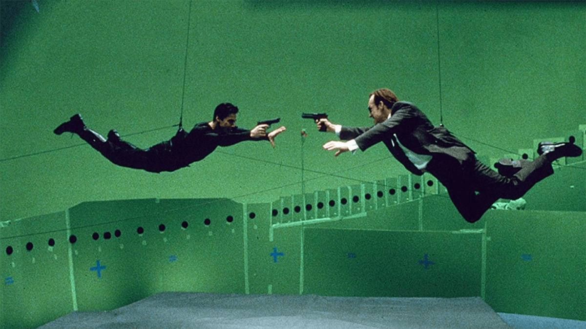

It's About Movies... Ever wonder how stuntmen stay safe when they're on fire, crashing through windows, or jumping from buildings?
Lively demonstrations show how "behind the scenes" wizardry is used to safely create the spectacular stunts and feats seen in movies. It's About Science... How is science used to help solve the challenges in movie-making? Steve Wolf shows how mechanics, kinetics, heat, electronics, optics, chemistry, engineering, mathematics, computers, and safety are used to create special effects. us insights into what is unique about our own brains and how they evolved. During a one-hour general assembly, Steve performs half a dozen stunts and special effects, explaining the science that makes them possible. He covers all the physical science tested in the TAKS, and does it in a way that kids will never forget!